Draft "23112026_(Dự thảo 1) Kế hoạch giảm phát thải HP 2026-2030.docx" (Hằng 25 Nov, v168, md5 03efcd01) · rule agreed with DAE: 2030 cap = BAU 2030 − 2020 × 43,5% · Open 25 Nov Doc · Full review
How to insert
In Google Docs / Word, press Ctrl+F and search for the anchor text (red box in the crop).
Select it, press Ctrl+Alt+M, then paste the comment with Copy comment.
The @emails at the start tag Hằng (httt), Hải Anh (hat) and Trang (ttt); Google Docs turns them into mentions and emails each person.
PDF pages refer to the 186-page LibreOffice PDF export of the 25 Nov docx; Word pagination may differ.
Status: VALID still holds unchanged, CHANGED partly fixed or updated on 25 Nov, FIXED, INVALID no longer applies, NEW introduced on 25 Nov.
@httt@allotropevc.com Đã sửa trên bản 25/11: cụm "năm cơ sở 2025" tại mục 4.2.1.4 đã đổi thành "Tổng phát thải từ năm 2025", không còn xuất hiện trong toàn văn.
@httt@allotropevc.com Đoạn văn mục 5.2.5 đã cập nhật đúng số liệu: "hơn 6 triệu tấn" sửa thành "hơn 13 triệu tấn" (khớp tổng 4 lĩnh vực 13.476.225 tấn) và "hơn với 90%" sửa thành "hơn 85,56%%" (11.530.524 / 13.476.225 = 85,56%). Còn lỗi gõ nhỏ "hơn 85,56%%" (lặp dấu % và thừa chữ "hơn"); đề nghị sửa thành "85,56%".
Fixed: Bảng 109 Energy synced to 11,530,524 (matches Bảng 105)
Năng lượngFIXEDPDF p162
Anchor text: 11.530.524
@httt@allotropevc.com @hat@allotropevc.com Đã sửa trên bản 25/11: Bảng 109 đã đồng bộ Năng lượng về 11.530.524 tCO₂tđ, khớp với Bảng 105; số cũ 11.563.491 không còn trong báo cáo. (Lưu ý: dòng Tổng cộng của Bảng 109 bị bỏ sót, xem mục N88.)
Team reply: Hằng: Đây là dữ liệu từ báo cáo cũ 2024 được thẩm định. Em đã xóa dòng 26 và điều chỉnh lại tổng (đã giải quyết)
Fixed: Transport 2030 BAU restored to '2,465,415.67'
Năng lượngFIXEDPDF p137
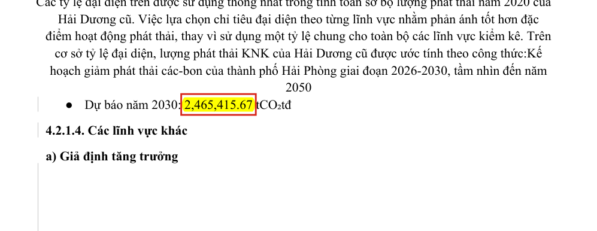
Anchor text: 2,465,415.67
@httt@allotropevc.com @hat@allotropevc.com Đã sửa trên bản 25/11: dự báo BAU 2030 Giao thông vận tải (1A3, mục 4.2.1.3) đã in đủ "2,465,415.67 tCO₂tđ" (1.469.712,61 x 1,109^5 = 2.465.415,67). Tổng 4 tiểu mục 1A khớp tổng Năng lượng 33.789.703,36 (chỉ còn định dạng dấu phân cách kiểu Mỹ nằm trong #30).
HA v6 workbook diverges from draft BAU 2030 by 25.24 Mt
ChungVALIDPDF p164
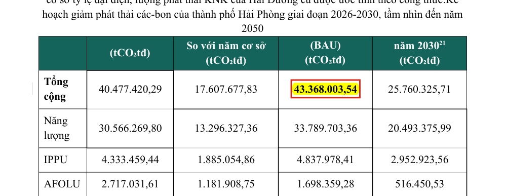
Anchor text: 43.368.003,54
@httt@allotropevc.com @hat@allotropevc.com Workbook HaiAnh_BAU_2030_v6.xlsx (sheet Tổng hợp) vẫn ghi BAU 2030 là 68.611.161,29 tCO₂tđ, lệch 25.243.157,75 tấn so với Bảng 99 (43.368.003,54), trong đó IPPU lệch 17.971.421,96 tấn, Năng lượng lệch 7.590.983,74 tấn, AFOLU lệch -319.247,95 tấn; tổng năm 2025 cũng lệch 6.404.225,87 tấn (45.900.205,57 so với 39.495.979,70). Ngoài ra cột H trong sheet Tổng hợp ghi tiêu đề lượng cần giảm nhưng tính mức trần 56,5% (38.765.306,13 thay vì 29.845.855,16). Cần đồng bộ hoặc chốt rõ chỉ dùng workbook hang_BAU_calc_ver1.xlsx cho tổng hợp.
Estimate or calc that moves sector totals; needs basis or correction.
#1
Bảng 110 (was 55) adds BAU 2030 column and formula
ChungFIXEDPDF p164
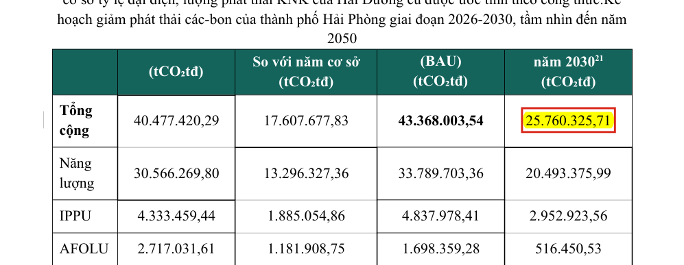
Anchor text: 25.760.325,71
@httt@allotropevc.com @hat@allotropevc.com Đã sửa: Bảng 110 đã bổ sung cột Năm 2030 (BAU) là 43.368.003,54 và chú thích 20 ghi rõ công thức Mức trần 2030 = BAU 2030 - Phát thải 2020 x 43,5%, khớp cả 5 dòng (25.760.325,71).
Team reply: Hằng: Bảng 44 đã có BAU 2030. Thay đổi Bảng 55 (đã giải quyết)
AFOLU cap 516,450.53 stays 70% below BAU, 0 t measures
AFOLUVALIDPDF p164
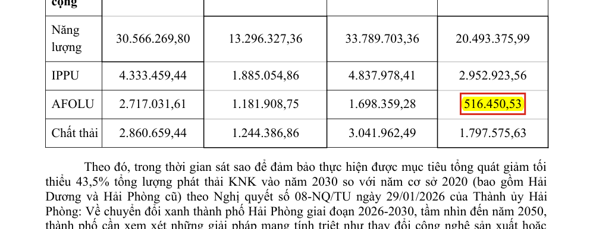
Anchor text: 516.450,53
@httt@allotropevc.com @hat@allotropevc.com Mức trần AFOLU đã cập nhật thành 516.450,53 (1.698.359,28 - 1.181.908,75), vẫn thấp hơn BAU 70% trong khi Bảng 114 chưa lượng hóa tấn CO₂tđ nào cho AFOLU. Đề nghị bổ sung lượng giảm cụ thể hoặc nêu rõ đây là mục tiêu thách thức nhất.
2,000 MW offshore wind: state CF/zone, move post-2030, name units
Năng lượngVALIDPDF p166
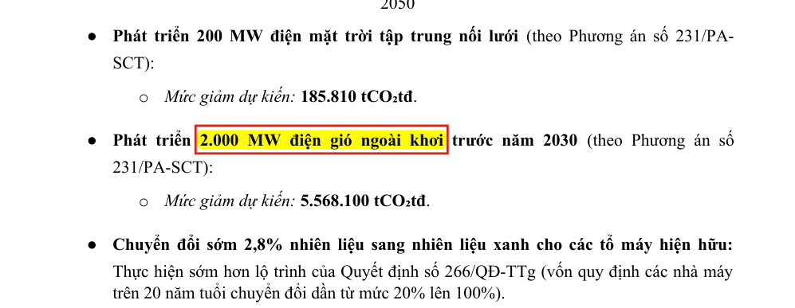
Anchor text: 2.000 MW điện gió ngoài khơi
@httt@allotropevc.com @hat@allotropevc.com Rút nhận xét 22/11 về mốc 35-38% (đó là bảng điện gió gần bờ, TC2026 p.193; bảng cố định ngoài khơi p.189 là 45,7%, dải 40,0-51,4%; UNDP 2025 p.30 là 54%; WB 2021 p.67 là 53%). Tuy vậy cần bổ sung 3 điểm: (1) ghi rõ giả định 4.500 h (51,4%) và đặc thù vùng Bắc (36-40%, TC2026 p.182); (2) chuyển 2.000 MW sang sau 2030 theo QĐ 768/QĐ-TTg và chính mục 5.3.1 của báo cáo ("đến sau năm 2030"); (3) nêu rõ tổ máy nhiệt điện nào giảm phát.
@httt@allotropevc.com Bản mới đã tách lời giải thích LC3, nhưng Bảng 112 vẫn cộng cả giảm clinker 83% xuống 65% (18 điểm %) và LC3 thay 1.764.441 tấn (17,88% lượng xi măng), kéo tỷ lệ clinker xuống 47,1% mà bài không nêu (mục 1 vẫn liệt kê đất sét nung). Riêng mục 1 tính thiếu 158.528 tấn do nhân 18% với clinker thay vì 1 - 65/83 (932.518 tấn).
Team reply: Hằng: 2 phương pháp độc lập. Giảm lượng clinker 83 xuống 64% khác với thay thế bằng đất sét trắng dùng như nguyên liệu đầu vào (chưa giải quyết)
@httt@allotropevc.com @hat@allotropevc.com Rút nhận xét 22/11 về tính trùng với 2.000 MW điện gió ngoài khơi (theo giải thích đường dây riêng sau công tơ). Bốn điểm cần làm rõ: (1) 737 MW nằm trong hay ngoài 2.000 MW (nếu ngoài, tổng 2.737 MW); (2) đây là giảm Phạm vi 2, không giảm Phạm vi 1 đốt nhiên liệu (96,8% BAU thép); (3) chưa có văn bản pháp lý; (4) 3.316,5 GWh = 640 kWh/tấn thép, gấp 1,6-1,8 lần mức 350-395 kWh/tấn tại Hòa Phát Hải Dương.
58% of quantified plan (7.89 Mt) is grid displacement
Năng lượngVALIDPDF p172
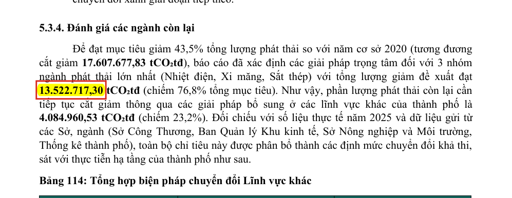
Anchor text: 13.522.717,30
@httt@allotropevc.com @hat@allotropevc.com 7,89 triệu tấn (58%) trong 13.522.717,30 tấn đến từ thay thế điện lưới (điện mặt trời, điện gió, nhiệt dư). Do kiểm kê Chương 3 theo ranh giới lãnh thổ Phạm vi 1, đề nghị ghi rõ quy tắc tính các lượng giảm điện lưới này vào mục tiêu thành phố.
Bảng 90 (was 35) total fixed; waste column still 1 t low
Chất thảiVALIDPDF p112
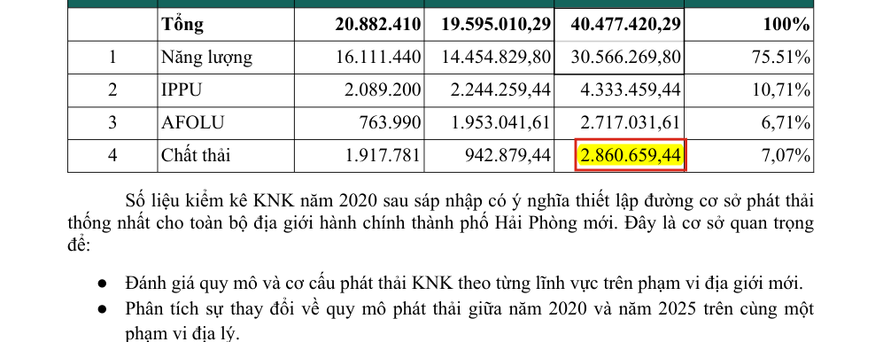
Anchor text: 2.860.659,44
@httt@allotropevc.com @hat@allotropevc.com Bảng 90 đã cập nhật AFOLU (2.717.031,61) và tổng (40.477.420,29), nhưng cột Chất thải vẫn là 2.860.659,44 trong khi 1.917.781 + 942.879,44 = 2.860.660,44 (lệch 1 tấn). Đề nghị ghi chú sai số làm tròn từ báo cáo cũ.
Team reply: Hằng: Bảng 33 lấy từ số liệu thực từ Báo cáo cũ việc lệch 1t có xảy ra nhưng báo cáo cũ là bản được thẩm định nên giữ nguyên (đã giải quyết)
Section 3.2.2 cement IPPU explanation fixed to calcination
IPPUFIXEDPDF p117
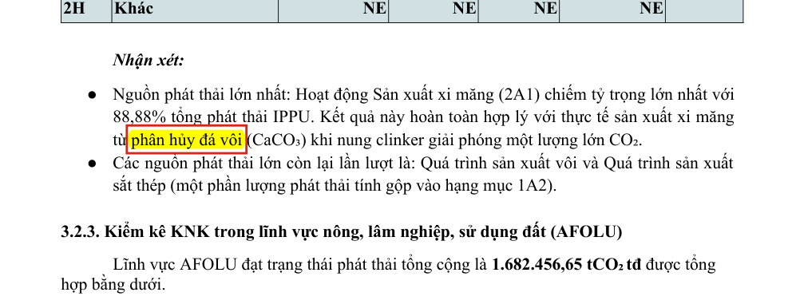
Anchor text: phân hủy đá vôi
@httt@allotropevc.com Đã sửa: mục 3.2.2 đã chỉnh câu giải thích 2A1 thành CO₂ từ phân hủy đá vôi (CaCO₃) khi nung clinker, tách khỏi đốt nhiên liệu 1A2f.
Team reply: Đã đánh dấu giải quyết
Basis: d23delta #20; draft23 p109; report25 p117
N4
Fixed: Bảng 109 energy total synced to 11,530,524
Năng lượngFIXEDPDF p162
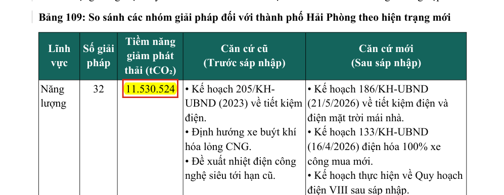
Anchor text: 11.530.524
@httt@allotropevc.com @hat@allotropevc.com Đã sửa trên bản 25/11: Bảng 109 đã cập nhật Năng lượng từ 11.563.491 về 11.530.524, khớp với Bảng 105. Dòng tổng 66 giải pháp (13.476.225) hiện bị bỏ khỏi Bảng 109, theo dõi riêng tại N88.
@httt@allotropevc.com @hat@allotropevc.com Bảng 105 mục II.7 vẫn giữ 976.154 tấn từ nhiệt điện than siêu tới hạn, mâu thuẫn với chủ trương không xây mới nhiệt điện than (mục 5.3.2.1) và QĐ 266/QHĐ VIII. Cùng bảng, mục II.3 điện gió ngoài khơi (4.357.500 tấn) ngầm định 3.520 h (40,2%), khác mức 4.500 h (51,4%) ở mục 5.3.2.3.
Fixed: Section 3.4 2020-2025 delta updated to 981,440.59
ChungFIXEDPDF p125
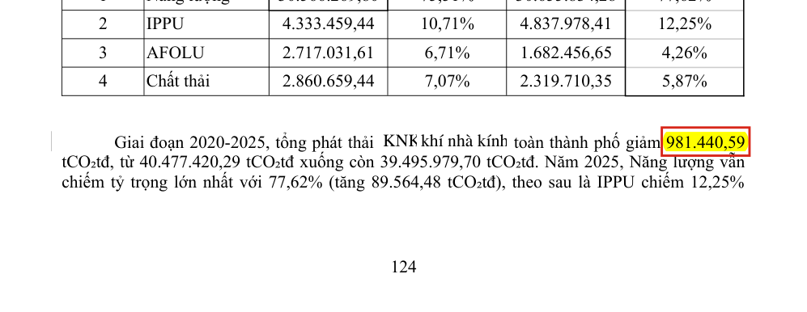
Anchor text: 981.440,59
@httt@allotropevc.com @hat@allotropevc.com Đã sửa trên bản 25/11: mục 3.4 đã sửa mức giảm 2020-2025 từ 981.430,59 thành 981.440,59 tCO₂tđ, khớp phép trừ 40.477.420,29 - 39.495.979,70 = 981.440,59.
Basis: d23delta New #3; draft23 p118; report25 p125
N10
HA v6 halves BOT Hải Dương (-3.62 Mt vs Bảng 98)
Năng lượngVALIDPDF p135
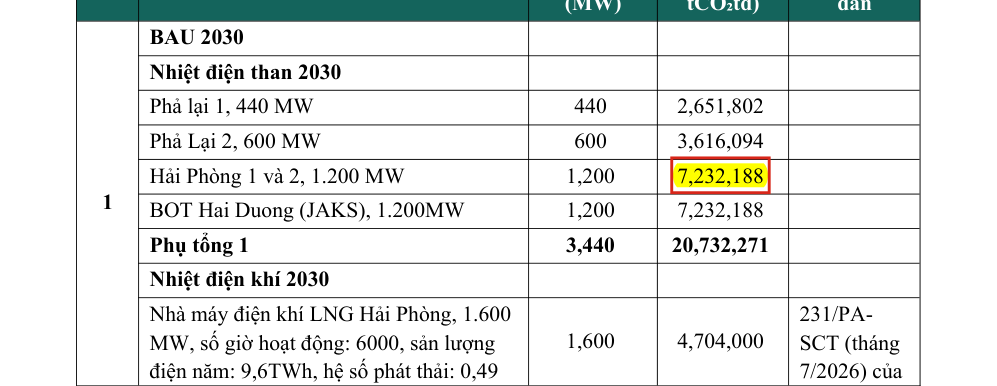
Anchor text: 7,232,188
@httt@allotropevc.com @hat@allotropevc.com Trong workbook HaiAnh_BAU_2030_v6.xlsx (Nhiệt điện!F24), dòng BOT Hải Dương 1.200 MW chỉ ghi 3.616.094 tấn (bằng 1 tổ máy 600 MW), khiến BAU nhiệt điện trong file chỉ là 17.116.177 tấn, thấp hơn 3.616.094 tấn so với 20.732.271 tấn (và 7.232.188 tấn của BOT) tại Bảng 98. Cần sửa lại công thức trong workbook cho khớp báo cáo.
§4.2.3 says AFOLU declines, but BAU rises 1.68 -> 1.70 Mt
AFOLUVALIDPDF p138
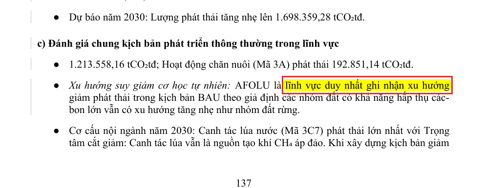
Anchor text: lĩnh vực duy nhất ghi nhận xu hướng
@httt@allotropevc.com @hat@allotropevc.com Mục 4.2.3 nhận định "AFOLU là lĩnh vực duy nhất ghi nhận xu hướng giảm", nhưng theo Bảng 99 và Bảng 110, phát thải AFOLU thực tế tăng từ 1.682.456,65 tấn (2025) lên 1.698.359,28 tấn (BAU 2030). Đề nghị chỉnh câu nhận định cho khớp số liệu bảng (giảm giai đoạn 2020-2025, tăng nhẹ 2025-2030).
Team reply: Hằng (25/11, comment Word): Câu này nghĩa là trong toàn bộ các nguồn chỉ có AFOLU là có bể hấp thụ (giảm phát thải) từ đất rừng, đất trồng trọt. (Đề nghị chỉnh câu văn nêu rõ "có bể hấp thụ" và tăng nhẹ từ 1,68 lên 1,70 triệu tấn giai đoạn 2025-2030.)
@httt@allotropevc.com @hat@allotropevc.com Biện pháp đồng đốt 15% RDF (238.416,90 tấn) trong workbook tính trên nhiên liệu năm 2020 (1.589.446,03) thay vì nhiên liệu BAU 2030 (1.606.939,74 x 15% = 241.041 tấn, lệch 2.624 tấn). Ngoài ra, con số này tính theo tổng nhiệt lượng thay than mà chưa tách tỷ lệ thành phần hóa thạch trong RDF (nếu 25% hóa thạch thì mức giảm ròng khoảng 180.781 tấn), và chỉ dẫn chung "lộ trình của ngành vật liệu xây dựng" chưa nêu tên văn bản. Đề nghị ghi rõ nền tính, tỷ lệ hóa thạch và căn cứ.
@httt@allotropevc.com @hat@allotropevc.com Tổng hai biện pháp IPPU tại Bảng 106 chỉ đạt 216.340 tấn, thiếu 1.668.714,86 tấn so với mục tiêu giảm phát thải IPPU 1.885.054,86 tấn tại Bảng 110. Đề nghị nêu rõ lý do chênh lệch lớn giữa danh mục trước sáp nhập và kế hoạch mục 5.3.
Bảng 107 AFOLU catalogue (1.36 Mt) exceeds AFOLU target, yet Bảng 114 has 0 t
AFOLUVALIDPDF p160
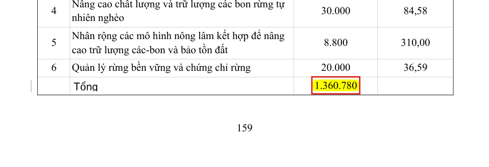
Anchor text: 1.360.780
@httt@allotropevc.com @hat@allotropevc.com Danh mục AFOLU tại Bảng 107 đạt 1.360.780 tấn (vượt 178.871,25 tấn so với mục tiêu 1.181.908,75 tấn tại Bảng 110), nhưng sang kế hoạch đề xuất ở Bảng 114 lại không lượng hóa tấn nào cho AFOLU. Đề nghị giải thích rõ phần nào từ Bảng 107 được giữ lại cho giai đoạn 2026-2030.
@httt@allotropevc.com @hat@allotropevc.com Tổng 10 biện pháp Chất thải tại Bảng 108 đạt 368.581 tấn, thiếu 875.805,86 tấn so với mục tiêu 1.244.386,86 tấn tại Bảng 110. Cần làm rõ nguồn bù đắp khoảng thiếu này trong Bảng 114 (như điện rác).
66-measure catalogue (13.48 Mt) overlaps 3-industry plan (13.52 Mt)
ChungVALIDPDF p172
Anchor text: 13.522.717,30
@httt@allotropevc.com @hat@allotropevc.com Tổng 66 biện pháp tại Bảng 105-108 (13.476.225 tấn) và gói 3 ngành tại Bảng 111-113 (13.522.717,30 tấn) chênh nhau 46.492,30 tấn và bị trùng phạm vi: Bảng 105 đã có các biện pháp xi măng mục 7-10 (703.500 tấn) và sắt thép mục 11-13, 22 (425.730 tấn) nên hai bộ giải pháp không thể cộng gộp. Đề nghị ghi rõ mối quan hệ thay thế hay kế thừa giữa mục 5.2 và 5.3.
Anchor text: Mức trần 2030 = BAU 2030 - Phát thải 2020 x 43,5%
@httt@allotropevc.com @hat@allotropevc.com Trong workbook hang_BAU_calc_ver1.xlsx, các ô tổng năm 2020 và 2025 (Tổng hợp!C3:C6, F3:F6) đều gõ cứng, không có bảng tính chi tiết tiểu ngành năm 2025 (Bảng 91-94) nên không truy xuất được nguồn gốc trong bộ file đính kèm. Ngoài ra, chú thích (*) ở sheet Tổng hợp ghi sai là "giảm 43.5% so với BAU" dù công thức cột I tính đúng BAU - 2020 x 43,5%. Đề nghị liên kết công thức và sửa chú thích workbook.
Bảng 109 adds policy citations, but Bảng 105 (32 measures) still lacks workbook
Năng lượngCHANGEDPDF p157
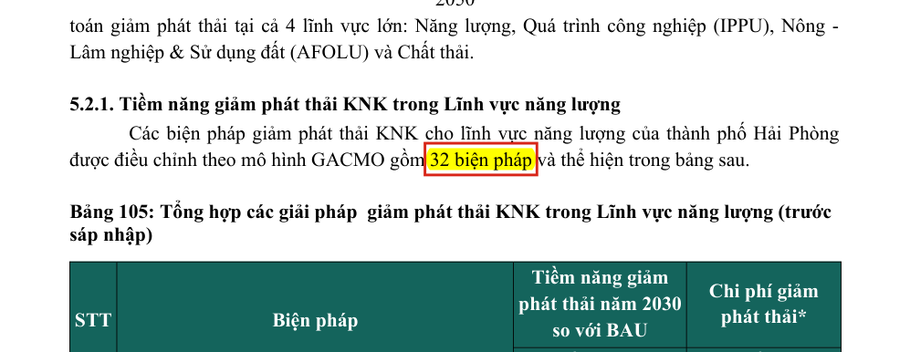
Anchor text: 32 biện pháp
@httt@allotropevc.com @hat@allotropevc.com Bảng 109 bản 25/11 đã bổ sung cột Căn cứ cũ và Căn cứ mới (205/KH-UBND, 186/KH-UBND...), nhưng cả hai workbook đính kèm vẫn không chứa bảng tính cho 32 biện pháp Năng lượng tại Bảng 105 (11.530.524 tấn). Đề nghị đính kèm file tính GACMO/Bảng 105-108 để phục vụ thẩm định.
Basis: d23calc §3 trace gap 2; draft23 p149-152; report25 p157
N34
2020 baselines for thermal, cement, steel typed in HA v6 without Hải Dương link
ChungVALIDPDF p165
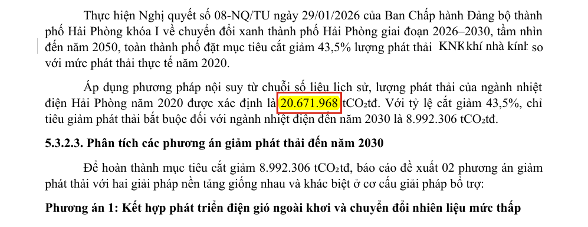
Anchor text: 20.671.968
@httt@allotropevc.com @hat@allotropevc.com Mức phát thải năm 2020 của ba ngành trọng điểm gồm Nhiệt điện (20.671.968 tấn, mục 5.3.2.2), Xi măng (5.568.861,83 tấn, mục 5.3.3.2) và Sắt thép (4.845.876,25 tấn, mục 5.3.4.2) đều gõ cứng trong workbook HaiAnh_BAU_2030_v6.xlsx; sheet nội suy 2020 chỉ có phần Hải Phòng cũ (10.896.167; 2.758.396; 2.548.016 tấn) và chưa liên kết phần Hải Dương cũ. Đề nghị bổ sung cột tách rõ Hải Phòng cũ + Hải Dương cũ và liên kết công thức vào mục tiêu 43,5%.
LC3 uses 0.75 tCO₂/t clinker vs 0.525 (clinker cut) and 0.7212 (BAU)
IPPUVALIDPDF p169
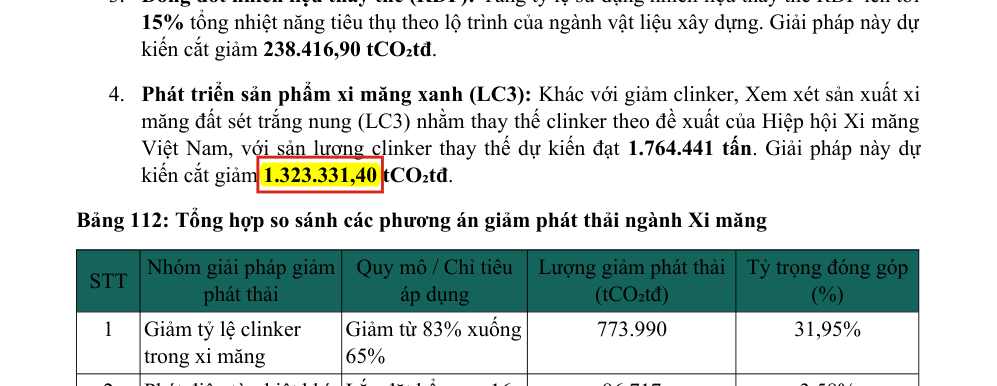
Anchor text: 1.323.331,40
@httt@allotropevc.com @hat@allotropevc.com Trong workbook (Xi măng!D39), biện pháp LC3 dùng hệ số 0,75 tCO₂/tấn clinker thay thế, khác với mức 0,525 (chỉ quá trình) ở dòng giảm tỷ lệ clinker (D36) và mức 0,7212 suy ra từ tổng BAU xi măng (5.906.881,96 / 8.190.366,13), làm chênh 50.818 tấn so với mức 0,7212; khối lượng 1.764.441,869 tấn clinker cũng chưa nêu nguồn. Đề nghị thống nhất một hệ số phát thải clinker và ghi rõ nguồn sản lượng.
Basis: d23calc §4 Xi măng!D39, F40; draft23 p163-164; report25 p169
N39
Principle 1 only partly met: 4 plan measures lack approved legal decisions
ChungVALIDPDF p169
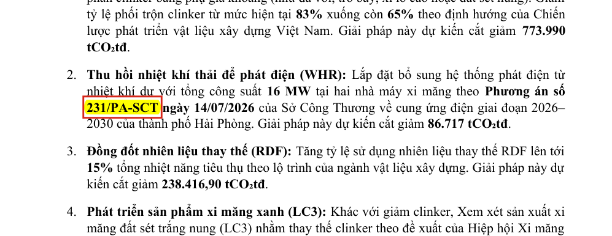
Anchor text: 231/PA-SCT
@httt@allotropevc.com @hat@allotropevc.com Theo nguyên tắc ưu tiên biện pháp có trong văn bản pháp lý đã phê duyệt, trong các biện pháp trọng tâm mục 5.3 chỉ có Phả Lại 1, lộ trình chuyển đổi nhiên liệu (QĐ 266/QĐ-TTg) và định hướng giảm clinker 65% (QĐ 1266/QĐ-TTg) dựa trên quyết định đã duyệt. Điện mặt trời 200 MW và điện gió 2.000 MW dựa trên phương án 231/PA-SCT, LC3 dựa trên đề xuất Hiệp hội Xi măng, RDF chưa nêu tên văn bản, còn 737 MW cho thép không có căn cứ pháp lý. Đề nghị phân nhóm rõ biện pháp đã có quyết định và biện pháp đề xuất.
Basis: d23solx C.3 NEW 2; draft23 p161-165; report25 p169
N40
No plan measure names plant, investor, contract, or MRV owner
ChungVALIDPDF p169
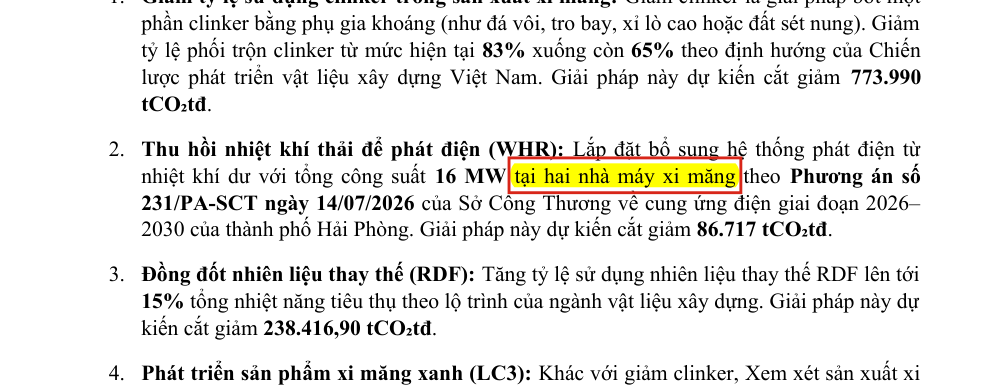
Anchor text: tại hai nhà máy xi măng
@httt@allotropevc.com @hat@allotropevc.com Toàn bộ các bảng kế hoạch mục 5.3 (Bảng 111-113) chưa nêu tên chủ đầu tư, tổ máy/nhà máy cụ thể (ngoài Phả Lại 1 và nhiệt dư Hòa Phát Hải Dương), hợp đồng hay đơn vị đầu mối MRV. Đề nghị bổ sung cột đơn vị chủ trì và cơ chế theo dõi để bảo đảm giám sát mức trần năm 2030.
Basis: d23solx C.3 NEW 5; draft23 p161-166; report25 p169
N42
Bảng 105-108 tagged '(trước sáp nhập)' & Bảng 109 splits old/new plans; 66 rows still lack activity data
ChungCHANGEDPDF p162
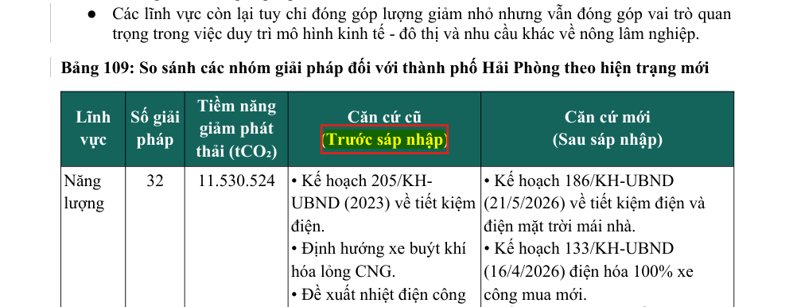
Anchor text: Trước sáp nhập
@httt@allotropevc.com @hat@allotropevc.com Bản 25/11 đã thêm nhãn "(trước sáp nhập)" vào tiêu đề Bảng 105-108 và tách cột "Căn cứ cũ (Trước sáp nhập)" với "Căn cứ mới (Sau sáp nhập)" trong Bảng 109. Tuy nhiên toàn bộ 66 dòng vẫn giữ số liệu cũ và không có số liệu hoạt động đi kèm (số hộ, số xe, diện tích, sản lượng).
Bảng 105 I.7-I.9 cement energy measures exceed typical benchmarks
Năng lượngVALIDPDF p157
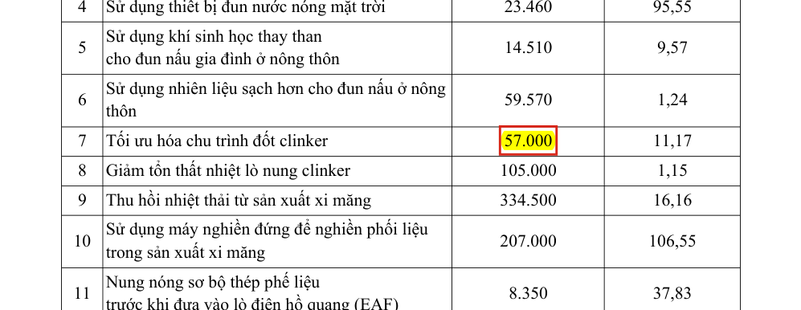
Anchor text: 57.000
@httt@allotropevc.com @hat@allotropevc.com Ba biện pháp tiết kiệm năng lượng xi măng tại Bảng 105 đều cao hơn thông lệ quốc tế: tối ưu đốt clinker 57.000 tấn (6,96 kg/tấn clinker so với 2-5 kg/tấn), giảm tổn thất nhiệt lò 105.000 tấn (12,82 so với 5-10 kg/tấn) và phát điện nhiệt dư 334.500 tấn (62 kWh/tấn clinker so với 25-30 kWh/tấn theo WB). Đề nghị chú thích nguồn từ báo cáo cũ và tránh trùng với Bảng 112.
Bảng 105 I.12, I.13, I.22 steel energy measures exceed benchmarks
Năng lượngVALIDPDF p157
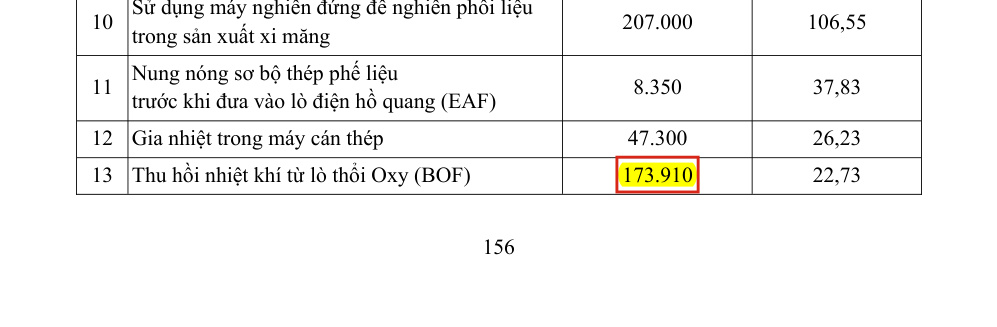
Anchor text: 173.910
@httt@allotropevc.com @hat@allotropevc.com Ba biện pháp thép tại Bảng 105 cần chú thích cơ sở tính: thu hồi nhiệt khí lò thổi BOF 173.910 tấn (67 kg/tấn so với 20-30 kg/tấn) và phun than antraxit lò cao 196.170 tấn (75,6 so với 30-40 kg/tấn) đều cao gấp đôi thông lệ; gia nhiệt lò cán 47.300 tấn (36,5 kg/tấn) ngầm định tỷ lệ áp dụng 50% nhưng chưa ghi rõ.
Bảng 105 I.14-I.20 transport measures lack tonne-km and fleet counts
Năng lượngVALIDPDF p158
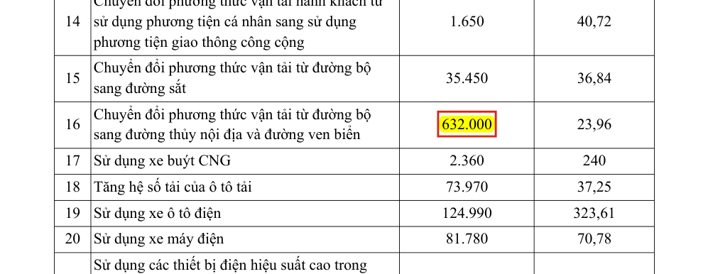
Anchor text: 632.000
@httt@allotropevc.com @hat@allotropevc.com Bảy biện pháp giao thông tại Bảng 105 (chuyển tải đường thủy 632.000 tấn, ô tô điện 124.990, xe máy điện 81.780, tối ưu tải trọng xe tải 73.970, đường sắt 35.450, xe buýt CNG 2.360, vận tải công cộng 1.650 tấn) không nêu lưu lượng tấn-km, hành khách-km hay số đầu xe; riêng đường thủy 632.000 tấn là mức giảm lớn nhưng chưa có số liệu hoạt động kiểm chứng.
Bảng 105 I.25 biofuels 100% E5 (302 kt) is 3.2x total road petrol CO₂
Năng lượngVALIDPDF p158
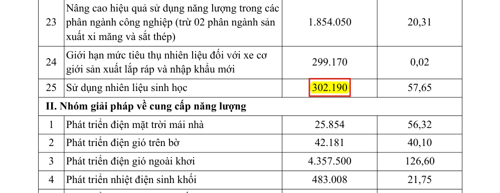
Anchor text: 302.190
@httt@allotropevc.com @hat@allotropevc.com Mục I.25 sử dụng 100% xăng sinh học E5 ghi mức giảm 302.190 tấn, lớn gấp 3,2 lần toàn bộ phát thải CO₂ từ xăng đường bộ. Đề nghị rà soát lại giả định tỷ lệ pha trộn (E5 chỉ giảm ~5% phát thải xăng) hoặc ghi chú lỗi từ báo cáo cũ.
@httt@allotropevc.com @hat@allotropevc.com Hai biện pháp phụ gia thay thế clinker tại Bảng 106 (phụ gia khoáng tự nhiên 19,5% giảm 76.060 tấn và phụ gia thải công nghiệp 10,5% giảm 140.280 tấn) thấp hơn 13 lần và 3,9 lần so với mức tính theo hệ số 0,525 tCO₂/tấn clinker (~1,01 triệu tấn và ~544.000 tấn). Đề nghị nêu rõ sản lượng xi măng áp dụng (chỉ một phần hay toàn thành phố).
@httt@allotropevc.com @ttt@allotropepartners.com Khi xóa hai công thức ước tính phát thải năm 2020 (bản sửa ngày 25/11, mục 2.4.3), các chỉ số dưới trong khối công thức OMML không bị xóa theo, để lại hai dòng rác "i,2020i, 2020i, 2020" và "i, 2020i, 2025i" ngay khi chấp nhận toàn bộ thay đổi. Đề nghị xóa sạch cả hai dòng công thức cũ.
Rebuilt Bảng 109 drops its Total row (66 measures, 13,476,225 tCO₂e)
ChungNEWPDF p162
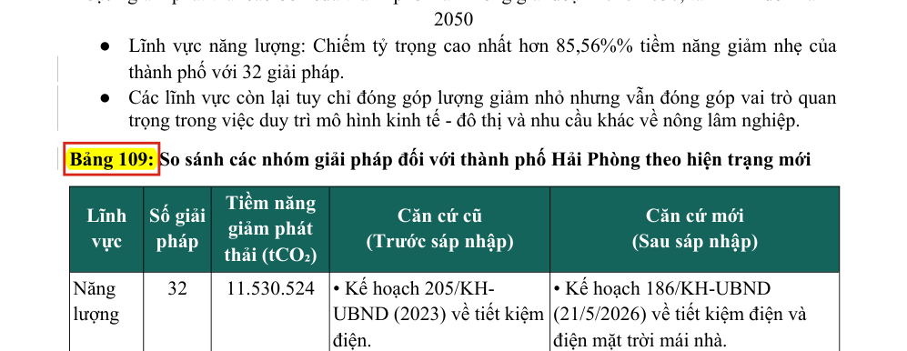
Anchor text: Bảng 109:
@httt@allotropevc.com @hat@allotropevc.com Khi làm lại Bảng 109 trên bản 25/11 (thêm cột Căn cứ cũ/mới và sửa Năng lượng về 11.530.524), bảng bị bỏ mất dòng Tổng cộng (66 giải pháp; 11.530.524 + 216.340 + 1.360.780 + 368.581 = 13.476.225 tCO₂tđ). Thiếu dòng tổng khiến người đọc không đối chiếu trực tiếp được con số "hơn 13 triệu tấn" và tỷ trọng 85,56% ở mục 5.2.5. Đề nghị khôi phục dòng Tổng cộng ở cuối Bảng 109.
Consistency, wording, format (team fixes after the coordination event).
#22
Bảng 91 (was 36) total row separators fixed
Năng lượngFIXEDPDF p113
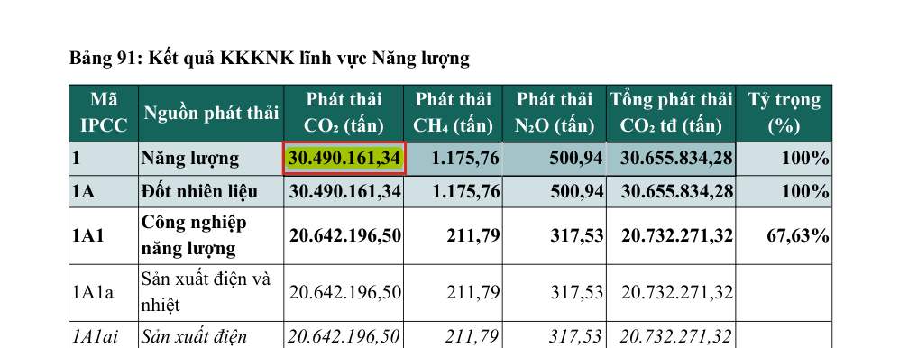
Anchor text: 30.490.161,34
@httt@allotropevc.com @ttt@allotropepartners.com Đã sửa: dòng tổng Bảng 91 đã đổi sang dấu phân cách kiểu Việt Nam (30.490.161,34 và 30.655.834,28).
Team reply: Đã đánh dấu giải quyết
Basis: d23delta #22; draft23 p106; report25 p113
#27
LC3 still written 'đất sét trắng nung'
IPPUVALIDPDF p169
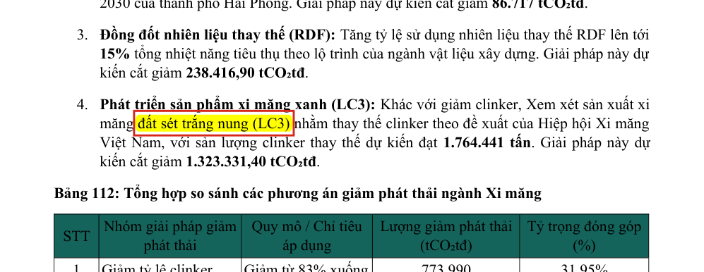
Anchor text: đất sét trắng nung (LC3)
@httt@allotropevc.com @ttt@allotropepartners.com Mục 5.3.3.3 vẫn ghi "xi măng đất sét trắng nung (LC3)". LC3 là xi măng đá vôi - đất sét nung (Limestone Calcined Clay), không phải đất sét trắng. Đề nghị bỏ từ "trắng" (sửa sau lễ điều phối).
Basis: d23delta #27; draft23 p163; report25 p169
N21
Bảng 98 caption says 'lĩnh vực năng lượng' but covers thermal only
Năng lượngVALIDPDF p135
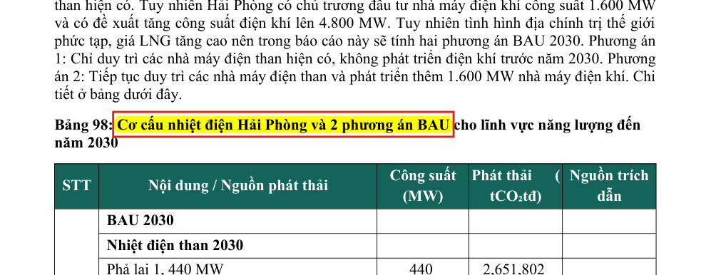
Anchor text: Cơ cấu nhiệt điện Hải Phòng và 2 phương án BAU
@httt@allotropevc.com @ttt@allotropepartners.com Tên Bảng 98 ghi "2 phương án BAU cho lĩnh vực năng lượng" nhưng nội dung bảng chỉ tính riêng ngành nhiệt điện (20.732.271 và 25.436.271 tấn), không gồm giao thông, công nghiệp hay dân dụng. Đề nghị sửa tên bảng thành "cho ngành nhiệt điện".
Basis: d23delta QA39; draft23 p127; report25 p135
N22
§3.2.4 already states 4D1 (28.76%), still omits 4D group share (47.24%)
Chất thảiCHANGEDPDF p121
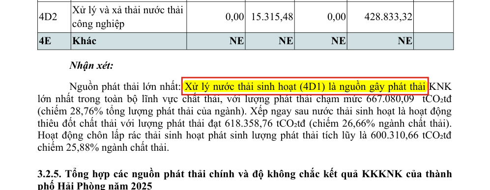
Anchor text: Xử lý nước thải sinh hoạt (4D1) là nguồn gây phát thải
@httt@allotropevc.com @ttt@allotropepartners.com Đoạn nhận xét mục 3.2.4 đã nêu tỷ trọng 28,76% của 4D1 (nhận xét 23/11 ghi thiếu chi tiết này), nhưng vẫn chưa nêu tỷ trọng toàn nhóm nước thải 4D là 47,24% để đối chiếu với Bảng 94. Đề nghị bổ sung tỷ trọng 47,24% của nhóm 4D.
@httt@allotropevc.com @hat@allotropevc.com Workbook HaiAnh_BAU_2030_v6.xlsx còn bốn lỗi kỹ thuật nội bộ cần dọn nếu tiếp tục dùng: (1) điện lưới!D3 dùng mũ ^4 cho giai đoạn 2025-2030 (lệch 2.049.847 tấn Phạm vi 2); (2) Bảng tính PV2!B3:B7 nhân thêm hệ số 1,15 không giải thích (lệch 3.376.755 tấn); (3) nội suy 2020!H5:H8 trộn đơn vị tấn và nghìn tấn trong cùng cột; (4) sheet Rà soát có 7 ô lỗi #VALUE! và toàn bộ kết quả biện pháp đều gõ cứng thay vì dùng công thức.
Bảng 111 mixes coal EF (Phả Lại 1) and grid EF (wind/solar) without stating per row
Năng lượngVALIDPDF p167
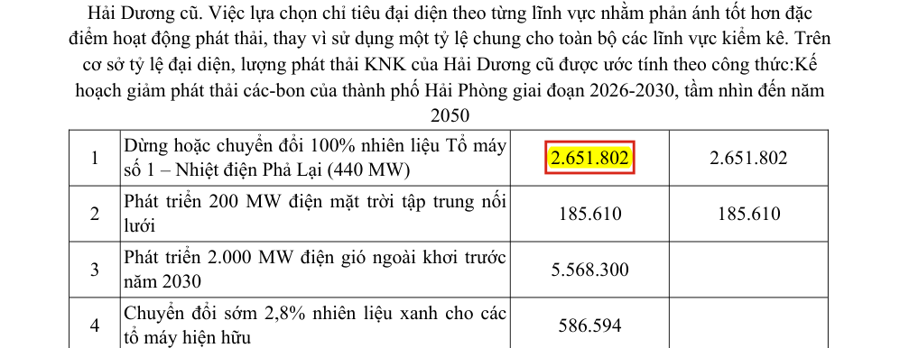
Anchor text: 2.651.802
@httt@allotropevc.com @hat@allotropevc.com Trong cùng Bảng 111, dòng đóng cửa Phả Lại 1 (440 MW, 2.651.802 tấn) tính theo hệ số phát thải nhà máy than (~1,0045 tCO₂/MWh ở 6.000 giờ), trong khi điện mặt trời và điện gió dùng hệ số lưới điện 0,6187 tCO₂/MWh. Đề nghị ghi rõ hệ số phát thải áp dụng cho từng dòng biện pháp.
@httt@allotropevc.com @hat@allotropevc.com Đã sửa trên bản 25/11: dòng 2 (Biomass/LNG) của Bảng 114 đã bỏ trích dẫn Kế hoạch 205/KH-UBND năm 2023; văn bản này chỉ còn nằm trong cột "Căn cứ cũ (Trước sáp nhập)" của Bảng 109.
@httt@allotropevc.com @hat@allotropevc.com Sáu biện pháp dân dụng tại Bảng 105 (điều hòa 339.040, tủ lạnh 155.260, đèn LED 81.710, nước nóng mặt trời 23.460, biogas 14.510, đun nấu sạch 59.570 tấn) không nêu số hộ gia đình hay số lượng thiết bị áp dụng nên không kiểm chứng được mức giảm.
Bảng 105 I.21 commercial equipment (116.6 kt) is 21% of stated 15% saving
Năng lượngVALIDPDF p158
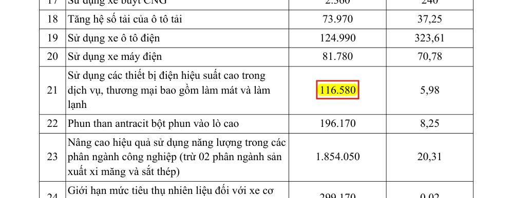
Anchor text: 116.580
@httt@allotropevc.com @hat@allotropevc.com Mục I.21 thiết bị thương mại hiệu suất cao ghi giảm 116.580 tấn, chỉ bằng 21% mức tiết kiệm 15% trên 5,50 TWh mà chính mô tả của dòng này nêu. Đề nghị kiểm tra lại phép tính hoặc chú thích phạm vi áp dụng.
Bảng 105 II.1 rooftop solar (25.9 kt) implies 929 vs 659 t/MW north yield
Năng lượngVALIDPDF p158
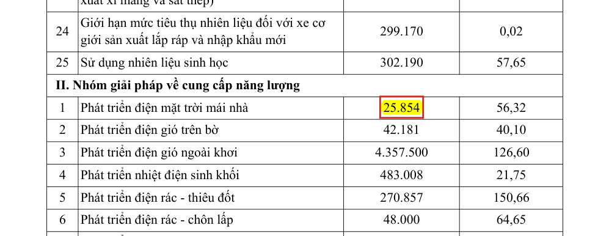
Anchor text: 25.854
@httt@allotropevc.com @hat@allotropevc.com Điện mặt trời áp mái mục II.1 (25.854 tấn) ngầm định 929 tấn/MW, cao hơn mức 659 tấn/MW tương ứng 1.000 kWh/kWp tại miền Bắc (GIZ/VEPG). Đề nghị ghi rõ công suất MWp và số giờ nắng giả định.
Bảng 105 II.2, II.4-II.6 power supply rows omit MW, CF, and capture rate
Năng lượngVALIDPDF p158
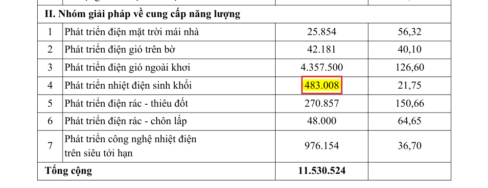
Anchor text: 483.008
@httt@allotropevc.com @hat@allotropevc.com Các dòng điện gió trên bờ (42.181 tấn), điện sinh khối (483.008 tấn), đốt rác phát điện (270.857 tấn) và điện khí bãi rác (48.000 tấn) tại Bảng 105 chưa nêu công suất lắp đặt, số giờ vận hành hay tỷ lệ thu hồi khí. Đề nghị bổ sung chú thích giả định đầu vào.
@httt@allotropevc.com @hat@allotropevc.com Mười ba biện pháp nông nghiệp tại Bảng 107 (AWD 47.000, tưới ngập khô 64.000, lúa-tôm 52.270, phân hữu cơ 113.480 tấn...) không nêu diện tích, quy mô đàn hay khối lượng phụ phẩm; riêng dòng 4 chuyển đổi đất lúa sang cây cạn ghi chi phí 0,00. Đề nghị chú thích nguồn số liệu hoạt động.
@httt@allotropevc.com @hat@allotropevc.com Hai biện pháp AWD + SRI ở mức hạ tầng trung bình (mục 12) và hạ tầng kém (mục 13) tại Bảng 107 có mức chi phí khác nhau nhưng lại ghi cùng một lượng giảm 23.400 tấn. Đề nghị kiểm tra lại số liệu nhập bảng.
Bảng 107 I.15 biogas programme (1,270 t) implausibly low with no digester count
AFOLUVALIDPDF p160
Anchor text: 1.270
@httt@allotropevc.com @hat@allotropevc.com Chương trình biogas mục 15 tại Bảng 107 chỉ ghi 1.270 tấn và không nêu số hầm biogas cấp thành phố, quá nhỏ so với quy mô chăn nuôi của Hải Phòng (710.000 lợn, 25.000 trâu bò tại Bảng 114). Đề nghị kiểm tra lại đơn vị hoặc phạm vi chương trình.
Bảng 107 II.3-II.6 forestry rows are 39-57% of area x factor
AFOLUVALIDPDF p160
Anchor text: 11.200
@httt@allotropevc.com @hat@allotropevc.com Bốn biện pháp lâm nghiệp II.3-II.6 tại Bảng 107 (phục hồi rừng 11.200, làm giàu rừng 30.000, trồng rừng gỗ lớn 8.800, quản lý rừng bền vững 20.000 tấn) chỉ đạt 39-57% so với tích diện tích nhân hệ số hấp thụ chuẩn (22.400; 53.000; 22.500; 50.000 tấn). Đề nghị nêu rõ diện tích áp dụng thực tế cho Hải Phòng.
Bảng 108 solid waste rows 2, 4, 5 lack tonnage; RDF 40% is only 1,214 t
Chất thảiVALIDPDF p161
Anchor text: 1.214
@httt@allotropevc.com @hat@allotropevc.com Tại Bảng 108, mục 2 tái chế (46.831 tấn) và mục 4 thu hồi khí bãi rác phát điện (15.216 tấn) chưa nêu khối lượng rác hay tỷ lệ thu hồi khí; riêng mục 5 sản xuất RDF từ 40% rác chỉ ghi 1.214 tấn (tương đương 0,1% dòng rác), bất thường thấp. Đề nghị kiểm tra lại phép tính.
Bảng 108 rows 3 & 6 (composting, AD) omit organic share and EF
Chất thảiVALIDPDF p161
Anchor text: 67.070
@httt@allotropevc.com @hat@allotropevc.com Hai biện pháp ủ phân 25% rác hữu cơ (67.070 tấn) và phân hủy kỵ khí 30% rác thực phẩm (51.289 tấn) tại Bảng 108 chưa ghi tỷ lệ chất hữu cơ/rác thực phẩm và hệ số phát thải áp dụng (0,4 và 0,79 tCO₂tđ/tấn). Đề nghị bổ sung chú thích đầu vào.
Bảng 108 wastewater rows 7-10 lack m³; row 8 is 5x row 7; row 9 is 258 t
Chất thảiVALIDPDF p161
Anchor text: 60.409
@httt@allotropevc.com @hat@allotropevc.com Bốn biện pháp nước thải tại Bảng 108 (mục 7-10) đều thiếu lưu lượng m³: mục 8 khử CH₄ sinh học (60.409 tấn) gấp đúng 5 lần mục 7 tối ưu xử lý nước thải sinh hoạt (12.082 tấn) nhưng không nêu thay đổi quy mô; mục 9 (258 tấn) và mục 10 (3.442 tấn) chỉ chiếm dưới 0,4% so với BAU nước thải công nghiệp 870.063 tấn. Đề nghị bổ sung cơ sở tính.
TOC lists itself as first entry (FMT-01, deferred)
ChungVALIDPDF p2
Anchor text: MỤC LỤC
@httt@allotropevc.com @ttt@allotropepartners.com Mục lục tự liệt kê chính dòng "MỤC LỤC ... 1" ở đầu danh sách. Xóa style Heading của tiêu đề Mục lục và cập nhật lại trường TOC sau lễ điều phối.
Basis: d23fmt FMT-01; draft23 p2; report25 p2
N60
4.1 and 4.2 styled as chapter titles inside Ch.4 (FMT-02, deferred)
ChungVALIDPDF p4
Anchor text: 4.1. Cơ sở xây dựng kịch bản BAU
@httt@allotropevc.com @ttt@allotropepartners.com Hai mục 4.1 và 4.2 đang gán style cấp Chương nên trong Mục lục và nội dung trông như Chương 4 bị tách thành ba chương. Hạ xuống Heading 2 sau lễ điều phối.
Section 5.3 sits one TOC level below 5.1 and 5.2 (FMT-04, deferred)
ChungVALIDPDF p5
Anchor text: 5.3. Đề xuất kế hoạch giảm phát thải
@httt@allotropevc.com @ttt@allotropepartners.com Mục 5.3 đang nằm thấp hơn một cấp so với 5.1 và 5.2 trong Mục lục, khiến phần đề xuất kế hoạch trông như tiểu mục của mục 5.2. Chỉnh 5.1, 5.2 và 5.3 về cùng một cấp Heading sau lễ điều phối.
Basis: d23fmt FMT-04; draft23 p5; report25 p5
N62
3.1.1-3.1.3 indented in TOC, but 3.2.5.1-3.2.5.2 still same level as 3.2.5 (deferred)
ChungCHANGEDPDF p3
Anchor text: 3.1.1. Kết quả kiểm kê KNK
@httt@allotropevc.com @ttt@allotropepartners.com Các tiểu mục 3.1.1-3.1.3 nay đã thụt cấp dưới 3.1 trong Mục lục, nhưng 3.2.5.1 và 3.2.5.2 vẫn đang cùng cấp Heading 3 với mục cha 3.2.5. Hạ cấp Heading cho 3.2.5.1-3.2.5.2 sau lễ điều phối.
Basis: d23fmt FMT-05; draft23 p3; report25 p3
N63
Fixed: TOC now lists 4.2.1.2 and removes duplicate 'a) Giả định tăng trưởng'
ChungFIXEDPDF p4
Anchor text: 4.2.1.2. Công nghiệp sản xuất và xây dựng (1A2)
@httt@allotropevc.com @ttt@allotropepartners.com Đã sửa trên bản 25/11: Mục lục đã bổ sung mục 4.2.1.2 (Công nghiệp sản xuất và xây dựng 1A2) và bỏ dòng lặp "a) Giả định tăng trưởng".
Fixed: Four unnumbered duplicate 4D TOC entries removed
Chất thảiFIXEDPDF p3
Anchor text: Xử lý và xả thải nước thải sinh hoạt (4D1)
@httt@allotropevc.com @ttt@allotropepartners.com Đã sửa trên bản 25/11: Mục lục đã xóa 4 dòng lặp không đánh số của mục 4D, chỉ còn mục 2.4.1.4.4 cùng a) 4D1 và b) 4D2.
Basis: d23fmt FMT-07; draft23 p3; report25 p3
N65
Heading punctuation glitches: footnote glued to 1.2.2; missing dots on 3.2.2 & 5.3.2.1
ChungVALIDPDF p24
Anchor text: 1.2.2. Đặc điểm tự nhiên6
@httt@allotropevc.com @ttt@allotropepartners.com Số chú thích 6 dính sát vào tiêu đề mục 1.2.2 ("Đặc điểm tự nhiên6"), đồng thời thiếu dấu chấm sau số mục ở 3.2.2 và 5.3.2.1. Chỉnh đồng nhất ký hiệu tiêu đề sau lễ điều phối.
Cross-references say 'Bảng sau đây' instead of table numbers (FMT-11, deferred)
ChungVALIDPDF p105
Anchor text: Bảng sau đây
@httt@allotropevc.com @ttt@allotropepartners.com Toàn báo cáo mới có một chỗ dẫn đúng số bảng, còn lại dùng "Bảng sau đây" (mục 2.4.2) và "trong bảng sau" (3 chỗ). Thay bằng số hiệu Bảng cụ thể sau lễ điều phối.
Basis: d23fmt FMT-11; draft23 p98; report25 p105
N67
Hình 1 is never cited in text and has no source line (FMT-12, FMT-45, deferred)
ChungVALIDPDF p17
Anchor text: Hình 1: Các tổ chức thực hiện
@httt@allotropevc.com @ttt@allotropepartners.com Hình 1 là hình vẽ duy nhất trong báo cáo nhưng chưa được dẫn chiếu trong đoạn văn và thiếu dòng "Nguồn:" phía dưới như các bảng. Bổ sung câu dẫn và dòng nguồn sau lễ điều phối.
Duplicated word 'theo theo' on p99 (FMT-22, deferred)
ChungVALIDPDF p106
Anchor text: theo theo
@httt@allotropevc.com @ttt@allotropepartners.com Lặp từ "theo theo cách tiếp cận" tại mục 2.4.2. Bỏ một từ "theo" sau lễ điều phối.
Basis: d23fmt FMT-22; draft23 p99; report25 p106
N71
Duplicated word 'trang trang 3.28' on p115 (FMT-23, deferred)
ChungVALIDPDF p123
Anchor text: 3.28
@httt@allotropevc.com @ttt@allotropepartners.com Lặp từ "trang trang 3.28" tại mục 3.2.5.2. Sửa thành "trang 3.28" sau lễ điều phối.
Basis: d23fmt FMT-23; draft23 p115; report25 p123
N72
Duplicated word 'các các phụ gia' on p148 (FMT-24, deferred)
IPPUVALIDPDF p155
Anchor text: các các phụ gia
@httt@allotropevc.com @ttt@allotropepartners.com Lặp từ "các các phụ gia" tại mục 5.1.5. Sửa thành "các phụ gia" sau lễ điều phối.
Basis: d23fmt FMT-24; draft23 p148; report25 p155
N73
Duplicated word 'lần lần' in footnotes 1-4 (FMT-25, deferred)
ChungVALIDPDF p18
Anchor text: lần lần
@httt@allotropevc.com @ttt@allotropepartners.com Chú thích chân trang 1 lặp từ "hai năm một lần lần thứ ba" và lỗi này lặp lại ở các chú thích 2-4 (Chương 1). Sửa thành "hai năm một lần thứ ba" sau lễ điều phối.
@httt@allotropevc.com @ttt@allotropepartners.com Chú thích vẫn viết thường "Bau 2030" và vẫn lặp nguyên văn ở hai vị trí, nay đổi số từ 18 và 19 sang chú thích 19 (Bảng 99) và chú thích 20 (Bảng 110). Đổi thành "BAU 2030" và gộp gọn sau lễ điều phối.
Unhyphenated 'các bon' vs 359 'các-bon' (FMT-31, deferred)
AFOLUVALIDPDF p160
Anchor text: các bon rừng
@httt@allotropevc.com @ttt@allotropepartners.com Bảng 107 viết "các bon" không có gạch nối, trong khi toàn báo cáo dùng "các-bon" ở 359 vị trí khác. Thống nhất thành "các-bon" sau lễ điều phối.
Basis: d23fmt FMT-31; draft23 p155; report25 p160
N78
Conclusion uses wrong report title (FMT-32, deferred)
ChungVALIDPDF p174
Anchor text: giảm phát thải khí nhà kính thành phố Hải Phòng
@httt@allotropevc.com @ttt@allotropepartners.com Phần Kết luận gọi báo cáo là "Kế hoạch giảm phát thải khí nhà kính thành phố Hải Phòng", khác với tên chính thức trên bìa và tiêu đề đầu trang là "Kế hoạch giảm phát thải các-bon". Thống nhất tên báo cáo sau lễ điều phối.
Basis: d23fmt FMT-32; draft23 p168; report25 p174
N79
No typographic hierarchy: all 208 headings 12pt bold, flat TOC (FMT-36, deferred)
ChungVALIDPDF p127
Anchor text: CHƯƠNG 4.
@httt@allotropevc.com @ttt@allotropepartners.com Toàn bộ 208 dòng tiêu đề chương, mục, tiểu mục đều cùng cỡ chữ 12pt Times New Roman in đậm và 128 dòng Mục lục căn cùng một lề trái nên không phân biệt được cấp bậc bằng thị giác. Phân cấp cỡ chữ (Chương 14pt, mục 13pt) và thụt lề Mục lục sau lễ điều phối.
Fixed: Bảng 19 now has Keep-with-next & Repeat Header and fits on p44
IPPUFIXEDPDF p44
Anchor text: Bảng 19:
@httt@allotropevc.com @ttt@allotropepartners.com Đã sửa trên bản 25/11: Bảng 19 đã bật Keep with next và Repeat Header Rows; tên bảng, tiêu đề cột và dòng dữ liệu 2A1 nằm gọn trên cùng một trang.
Fixed: Bảng 104 now has Keep-with-next & Repeat Header and fits on p156
IPPUFIXEDPDF p156
Anchor text: Bảng 104:
@httt@allotropevc.com @ttt@allotropepartners.com Đã sửa trên bản 25/11: Bảng 104 đã bật Keep with next và Repeat Header Rows; toàn bộ 4 dòng I1-I4s nằm gọn trên một trang.
Fixed: Bảng 112 caption no longer orphaned (fits with table on p169)
IPPUFIXEDPDF p169
Anchor text: Bảng 112:
@httt@allotropevc.com @ttt@allotropepartners.com Đã sửa trên bản 25/11: Bảng 112 đã bật Keep with next và Repeat Header Rows; tên bảng và toàn bộ 4 giải pháp nằm gọn trên một trang.
Bảng 89 splits across p104-105 without repeated header (FMT-41, deferred)
ChungVALIDPDF p111
Anchor text: Bảng 89:
@httt@allotropevc.com @ttt@allotropepartners.com Bảng 89 bị tách sang trang tiếp theo mà không có dòng tiêu đề cột lặp lại. Đưa gọn Bảng 89 về cùng một trang hoặc bật Repeat Header Rows sau lễ điều phối.
Bảng 39 breaks mid-row on p55 and wraps citation code (FMT-42, deferred)
AFOLUVALIDPDF p58
Anchor text: khác (Bò thịt)
@httt@allotropevc.com @ttt@allotropepartners.com Phần tiếp theo của Bảng 39 bị cắt ngang giữa dòng ("khác (Bò thịt)"), thiếu tiêu đề cột và cột cuối bị hẹp làm mã "2626/QĐ-BTNMT" gãy dọc. Tắt Allow row to break across pages và chỉnh độ rộng cột sau lễ điều phối.
Basis: d23fmt FMT-42; draft23 p55; report25 p58
N85
Fixed: Industrial wastewater table no longer leaves orphan row without header
Chất thảiFIXEDPDF p102
Anchor text: Tỷ lệ xử lý
@httt@allotropevc.com @ttt@allotropepartners.com Đã sửa trên bản 25/11: bảng nước thải công nghiệp (mục 2.4.1.4.4) mở đầu trang với đầy đủ tiêu đề cột và 4 dòng dữ liệu, không còn dòng lẻ mất tiêu đề.
Literal underscore subscripts in waste equations (FMT-44, deferred)
Chất thảiVALIDPDF p84
Anchor text: DDOCm_dx, T
@httt@allotropevc.com @ttt@allotropepartners.com Công thức tính bãi chôn lấp tại mục 2.4.1.4 vẫn in dấu gạch dưới thô ("DDOCm_dx, T", "DDOCm_a_x, T") thay vì định dạng chỉ số dưới. Định dạng lại công thức sau lễ điều phối.
Basis files: .coop/hang1125-review/{synthesis.md,lanes/h25-t1calc.md,lanes/h25-t3.md,lanes/h25-diff.md}. Every anchor is verified on its 25 Nov LibreOffice PDF page (186 pp) by build_comments25.py.